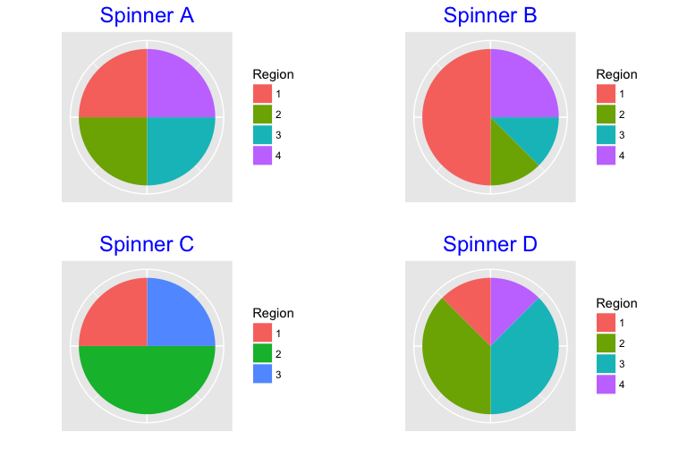
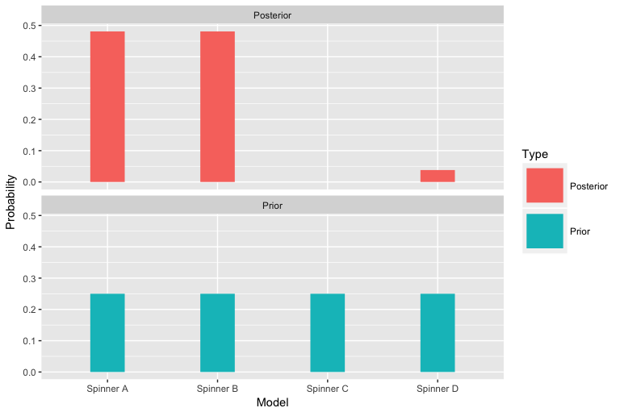

spinner_example.RmdSuppose we have four spinners with the following probabilities on the values 1, 2, 3, 4 (each row corresponds to the probabilities of 1, 2, 3, 4, for a specific spinner). One of the spinners will be chosen and we will learn the identity of the spinner by spinning it 10 times, getting a sequence of observations (each observation will be an integer from 1 to 4).
We define each spinner by a vector of region areas:
s_reg_A <- c(2, 2, 2, 2)
s_reg_B <- c(4, 1, 1, 2)
s_reg_C <- c(2, 4, 2)
s_reg_D <- c(1, 3, 3, 1)Show the four spinners:
library(TeachBayes)
many_spinner_plots(list(s_reg_A, s_reg_B,
s_reg_C, s_reg_D))
Define the corresponding probability distributions:
(Prob <- spinner_likelihoods(list(s_reg_A, s_reg_B, s_reg_C, s_reg_D)))## 1 2 3 4
## Spinner A 0.250 0.250 0.250 0.250
## Spinner B 0.500 0.125 0.125 0.250
## Spinner C 0.250 0.500 0.250 0.000
## Spinner D 0.125 0.375 0.375 0.125I use the sample function to simulate 10 spins from Spinner B. (Here we know the current spinner and we are interested in seeing how well Bayes’ rule can do in identifying this spinner.)
(spins <- spinner_data(s_reg_B, nsim=10))## [1] 3 3 1 2 1 1 1 4 4 2Compute the likelhoods of the four spinners using the dspinner function:
likelihoods <- dspinner(spins, Prob)Find the posterior probabilities of the four spinners using the bayesian_crank function. Initially we don’t know which is selected and so we assign prior probabilities of 1/4 to each spinner. The likelihoods are the probabilities of the observed data for each spinner, and the posterior gives the updated probabilities.
models <- c("Spinner A", "Spinner B", "Spinner C", "Spinner D")
prior <- rep(1/4, 4)
bayes_table <- data.frame(Model=models,
Prior=prior,
Likelihood=likelihoods)
(bayesian_crank(bayes_table) -> bayes_table)## Model Prior Likelihood Product Posterior
## 1 Spinner A 0.25 9.536743e-07 2.384186e-07 0.48097698
## 2 Spinner B 0.25 9.536743e-07 2.384186e-07 0.48097698
## 3 Spinner C 0.25 0.000000e+00 0.000000e+00 0.00000000
## 4 Spinner D 0.25 7.543713e-08 1.885928e-08 0.03804603Graph the prior and posterior probabilities. Hopefully Spinner B will have a high posterior probability since it was the one that was spun.
prior_post_plot(bayes_table)